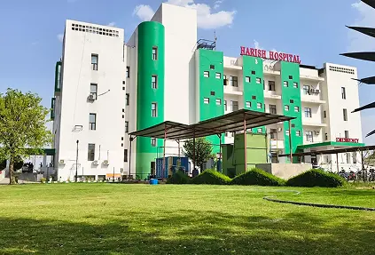

Years Experience
Radiation oncology consultation in Alwar
Dr. Neeraj Kumar Rathee
Consultant Radiation Oncologist at Harish Renova Cancer Centre
Specialist guidance for radiotherapy planning, cancer treatment discussions and second-opinion consultations in a clear, patient-first setting.
How consultation works
A clear visit experience for patients and families.
Share reports
Bring diagnosis, biopsy, imaging and previous treatment documents for review.
Clinical evaluation
The doctor reviews suitability, goals of care and treatment possibilities.
Planning discussion
Patients receive clear guidance on next steps, coordination and follow-up.
About the doctor
Focused oncology care with a calm, patient-first approach.
Dr. Neeraj Kumar Rathee is a Radiation Oncologist practicing at Harish Renova Cancer Centre, Alwar. He holds MBBS, MD Radiation Oncology, DNB Radiation Oncology and FCRO qualifications. Fellowship in Clinical and Radiation Oncology ( TMC, INDIA), Clinical Training in Pain and Palliative care medicine (TMC, INDIA) and Clinical Training in Particle Therapy ( NIRS-QST, JAPAN).
His work focuses on radiotherapy planning and oncology care for patients who need specialist evaluation, clear counselling and coordinated treatment guidance.
Training and experience
Studies and Experience
EDUCATION
1. MBBS
(Government Medical College and Hospital, Chandigarh)
SPECIALIST CREDENTIALS
1. MD (Radiation Oncology)
(Government Medical College and Hospital, Chandigarh)
2. DNB (Radiation Oncology)
(National Board of Examinations in Medical Sciences, INDIA)
ADVANCED STUDIES AND EXPOSURE
- Senior Resident in Maulana Azad Medical College, New Delhi
- Senior Resident in LNJP and GB Pant, New Delhi
- Fellowship in Clinical and Radiation Oncology (TMC, INDIA)
- Clinical Training in Pain and Palliative Care Medicine (TMC, INDIA)
- Clinical Training in Particle Therapy (NIRS-QST, JAPAN)
CURRENT PRACTICE
Harish Renova Cancer Center
Consultant
Clinical Hub
Comprehensive Oncology Care
Areas of expertise
Radiation oncology support across common cancer care pathways.
Breast cancers
Evaluation and radiotherapy planning support for suitable breast cancer cases.
Head and neck cancers
Specialist input for tumors involving the oral cavity, throat and related regions.
Gastrointestinal cancers
Care discussions for selected stomach, bowel, rectal and related GI cancer pathways.
Genitourinary cancers
Consultation for suitable urinary, male and female reproductive cancer treatment planning.
Gynecological cancers
Radiation oncology review for selected cervical, uterine and pelvic cancer care.
Thoracic malignancies
Specialist assessment for selected lung and chest-region cancer treatment plans.
Brain tumors
Radiotherapy planning discussions for suitable brain tumor cases after evaluation.
Bone and soft tissue tumors
Clinical review for selected bone and soft tissue tumor treatment pathways.
Care and services
Clear guidance before, during and after radiotherapy decisions.
Radiotherapy consultation
Radiation therapy planning and care for selected cancer conditions after review of diagnosis, staging information and patient-specific factors.
Treatment planning discussion
Review of reports, imaging and treatment options in coordination with the oncology team.
Second opinion guidance
Structured discussion for patients who need clarity before starting or continuing cancer treatment.
Pain and palliative care support
Supportive care planning focused on comfort, symptoms and quality of life when clinically appropriate.

Visit location
Harish Renova Cancer Centre
Telco Circle, Tijara Road, Alwar, Rajasthan 301001
For your first consultation
- Bring previous biopsy, imaging and treatment reports.
- Carry current medicines and any allergy information.
- Family members may join counselling if the patient prefers.
- Call ahead for appointment coordination or walk-in availability.
Patient reviews
What patients and families say.
★★★★★
"Dr. Rathee explained everything clearly and patiently. He took time to answer all our questions about the treatment plan. Highly recommended."
★★★★★
"Very knowledgeable and compassionate doctor. The consultation was thorough and he made us feel comfortable about the treatment process."
★★★★★
"Excellent doctor with great expertise. He guided us through every step of the radiotherapy process with genuine care and professionalism."
Patient questions
Simple answers before you visit.
Do I need an appointment?
Both appointment and walk-in visits are accepted. Calling ahead is recommended for smoother coordination.
What reports should I bring?
Bring biopsy reports, imaging films or CDs, PET/CT or MRI reports, previous treatment summaries and current medicines.
Is radiotherapy suitable for every cancer case?
No. Suitability depends on cancer type, stage, patient condition and treatment plan after specialist evaluation.
Can I request a second opinion?
Yes. A second opinion can help patients and families understand treatment options before deciding next steps.
Appointments and contact
Speak with the clinic team for consultation timing and visit coordination.
Harish Renova Cancer Centre, Telco Circle, Tijara Road, Alwar, Rajasthan 301001